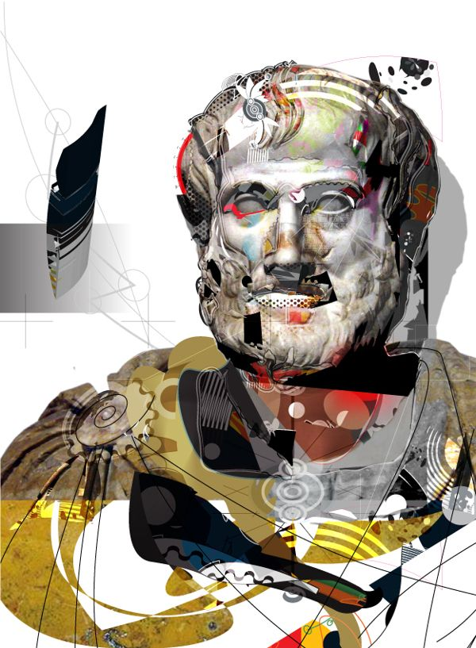

La prefilosofía se refiere al período de tiempo anterior al desarrollo formal de la filosofía como disciplina distinta. Se caracteriza por las especulaciones, reflexiones y cuestionamientos sobre cuestiones fundamentales sobre la existencia, la realidad, el conocimiento y la moral, pero sin la sistematización y el rigor conceptual que se encuentra en la filosofía propiamente dicha.
Este período suele abarcar el tiempo anterior al surgimiento de la filosofía en la antigua Grecia, aproximadamente desde el año 6000 a.C. hasta el siglo VI a.C. Durante este tiempo, las culturas antiguas de todo el mundo exploraron preguntas filosóficas a través de mitos, narrativas religiosas, poesía y narraciones orales. Sin embargo, no fue hasta el surgimiento de la filosofía griega que se comenzaron a formular argumentos sistemáticos y racionales para abordar estas cuestiones de manera más estructurada y crítica.

Durante el período de prefilosofía, las sociedades antiguas desarrollaron una serie de explicaciones y narrativas para comprender el mundo que las rodeaba. Estas explicaciones incluían mitos cosmogónicos sobre el origen del universo, mitos teogónicos que detallaban el origen y las relaciones entre los dioses, así como mitos etiológicos que explicaban el origen de fenómenos naturales y sociales. Aunque estas narrativas no se basaban en métodos de investigación sistemática o lógica deductiva, reflejaban los esfuerzos humanos por comprender el significado de la existencia y la naturaleza del mundo en el que vivían. La transición de la prefilosofía a la filosofía propiamente dicha se caracterizó por el surgimiento de una actitud crítica y racional hacia estas cuestiones, así como por el desarrollo de métodos de investigación sistemáticos y argumentativos para abordarlas.